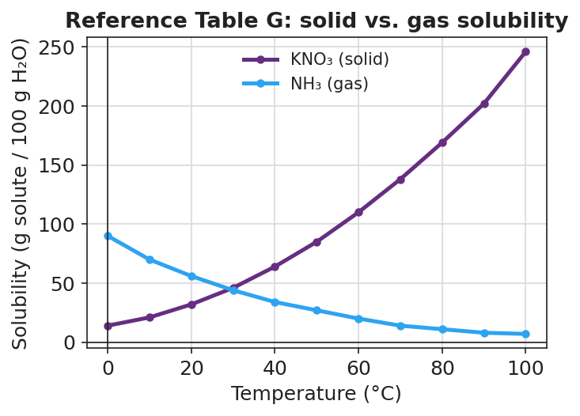

01 Phenomenon
Two identical cans of the same soda are opened at the exact same moment. One has been sitting in a warm car (about 35 °C); the other came straight from the refrigerator (about 4 °C). The warm can fizzes over, foams, and within minutes tastes flat. The cold can stays quietly carbonated and keeps its fizz much longer. Same soda. Same act of opening. The only difference is temperature — and the warm can loses its dissolved carbon dioxide gas far faster.
02 Driving question
Why does a warm soda go flat faster than a cold one?
03 Notice & wonder
| I notice… | I wonder… |
|---|---|
Turn & Talk #1: Look at the graph your teacher is projecting. One curve climbs as the water gets hotter, and one curve falls. Without reading any numbers yet — in one sentence, what do you think the direction of a curve tells you about the substance?
04 Initial model
Before your teacher explains anything, write your best guess: when a soda goes flat, what is actually leaving the liquid, and why would a warm soda lose it faster than a cold one? You do not need to be right — just write what you think now.
05 Investigate
Use Reference Table G (your classroom copy) and the graph below. The graph shows two substances from Table G: KNO₃, a solid, and NH₃, a gas.

Part A — Read exact values
To read a curve: find the temperature on the x-axis, go straight UP to the curve, then read straight ACROSS to the y-axis.
| Substance | 20 °C | 40 °C | 60 °C |
|---|---|---|---|
| KNO₃ (solid) | |||
| NH₃ (gas) |
Part B — Find the pattern
- As temperature goes UP, what happens to the KNO₃ (solid) numbers?
- As temperature goes UP, what happens to the NH₃ (gas) numbers?
- The two curves cross near 30 °C. What is true about both substances at that crossing point?
Part C — Sort by slope
A new substance has a curve on Reference Table G that goes down as temperature rises. Is it more likely a solid or a gas? How do you know?
Part D — Saturated or unsaturated?
The curve shows the maximum mass that can dissolve at each temperature. Compare each stated amount of KNO₃ to the curve at 20 °C (≈ 32 g), then circle your answer.
| Amount of KNO₃ in 100 g water at 20 °C | Above / on / below the curve? | Saturated, unsaturated, or excess undissolved? |
|---|---|---|
| 30 g | ||
| 32 g | ||
| 40 g |
06 Make it make sense
Use Reference Table G and the graph. Show how you read each value.
1. Read the solubility of KNO₃ (solid) at 40 °C.
Solubility = __________ g per 100 g water How I read it: _______________________________________________
2. Read the solubility of NH₃ (gas) at 60 °C.
Solubility = __________ g per 100 g water How I read it: _______________________________________________
3. A student stirs 40 g of KNO₃ into 100 g of water at 20 °C. The curve value at 20 °C is about 32 g.
- Is this solution saturated, unsaturated, or does some solute stay undissolved? _______________________
- How many grams (about) cannot dissolve? _______________________
- What could the student do to dissolve the rest without removing any water? _______________________
4. As a soda warms from refrigerator temperature to warm-room temperature, does the water hold MORE or LESS dissolved carbon dioxide gas? Use the direction of a gas curve to explain.
07 Key vocabulary
- solubility curve
- a line on Reference Table G showing the maximum mass of a solute that dissolves in 100 g of water at each temperature; the height of the curve is the saturation limit at that temperature, and the direction of its slope tells you whether the substance is a solid (rising) or a gas (falling)
- saturated
- describing a solution that holds exactly the maximum amount of dissolved solute for its temperature (sitting right on the curve); a saturated solution cannot dissolve more solute unless the temperature changes, and any extra stays undissolved
- temperature-solubility relationship
- the pattern on Reference Table G that for most *solids* solubility increases as temperature increases, while for *gases* solubility decreases as temperature increases; this relationship explains why a warm soda (dissolved gas) goes flat faster than a cold one
Use each term in a sentence about today’s graph or investigation. Do not copy the definition — describe something you actually read or figured out.
solubility curve: _______________________________________________ _______________________________________________
saturated: _______________________________________________ _______________________________________________
temperature-solubility relationship: _______________________________________________ _______________________________________________
08 Revise your model
Return to your Initial Model (your first guess about the flat soda). Revise it using evidence from the graph:
What gas is leaving the soda? _______________________
On Reference Table G, do gas curves go UP or DOWN as temperature rises? _______________________
So can warm water hold MORE or LESS dissolved gas than cold water? _______________________
Then finish this Because / But / So sentence:
A warm soda goes flat faster than a cold one because __________________________________________, but __________________________________________, so __________________________________________.
09 Exit ticket
(a) Using Reference Table G (the projected graph), read the solubility of KNO₃ at 80 °C.
Solubility of KNO₃ at 80 °C = __________ g per 100 g water
Is a solution of 150 g of KNO₃ in 100 g of water at 80 °C saturated, unsaturated, or does some stay undissolved? Explain in one sentence.
(b) A bottle of carbonated water is moved from the refrigerator to a warm room. Does the water now hold MORE or LESS dissolved carbon dioxide? Explain using the temperature-solubility relationship for gases.
(c) In one sentence, explain how the slope of a curve on Reference Table G tells you whether a substance is a solid or a gas.
10 Explore further
- Solubility — Javalab simulation (`javalab.org`, "Solubility" / "Saturated solution" module): students add solute to water and adjust temperature, watching the dissolved amount and any undissolved excess respond in real time. Use it to let groups *test* a prediction they first made from Reference Table G — e.g., "If KNO₃ holds 32 g at 20 °C, what happens when we heat to 60 °C?" — then confirm the curve's prediction against the simulation. No login required; a projector version works if devices are limited.
- Reference Table interpretation practice: groups read `figures/reference_table_g_solid_vs_gas.png` (and the full classroom Reference Table G if available) to extract solubility values at named temperatures, decide saturated vs. unsaturated for a given mass, and classify each curve as solid or gas by its slope direction. This is the core skill the lesson assesses.